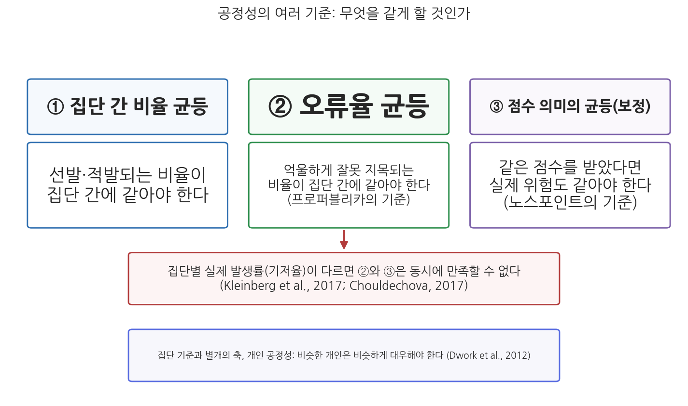
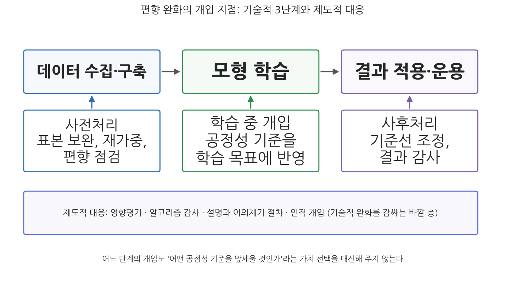

5주차 2차시. AI와 형평성 (2): 차별 사례와 공정성
전국에서 미래의 범죄자를 예측하는 데 쓰이는 소프트웨어가 있다. 그리고 그것은 흑인에게 편향되어 있다. (프로퍼블리카, 「기계 편향(Machine Bias)」, 2016)
이 장에서 배우는 것
2021년 1월 15일, 네덜란드의 뤼터(Mark Rutte) 내각이 총사퇴했다. 전쟁도 경제 위기도 아닌, 세무 행정 때문이었다. 세무당국이 십수 년에 걸쳐 약 2만 6천 명의 부모를 아동보육수당 부정수급자로 잘못 몰아 수당을 전액 환수하고, 그 과정에서 이중국적 같은 요소를 위험 지표로 삼는 알고리즘 기반 선별이 작동했다는 사실이 드러난 것이다. 의회 조사위원회는 보고서에 「전례 없는 불의(Ongekend onrecht)」라는 제목을 붙였다. 가정이 파산하고 가족이 해체된 피해 앞에서, 알고리즘을 앞세운 행정이 헌정 질서의 문제로 비화해 정부를 무너뜨린 사건이었다.
1차시에서 우리는 편향이 어디서 흘러들어 오는지 그 구조를 해부했다. 이번 차시는 그 구조가 실제 시민의 삶을 어떻게 할퀴었는지를 네 개의 확정적 사례, 곧 형사사법(COMPAS), 복지(네덜란드), 채용(아마존), 교육(영국 Ofqual)으로 읽는다. 그런데 사례를 읽고 나면 자연스러운 처방처럼 보이는 것, 곧 "알고리즘을 공정하게 만들면 된다"가 생각보다 훨씬 어려운 과제임을 알게 된다. "공정하다"의 기준이 하나가 아니고, 그 기준들이 서로 충돌하기 때문이다. 이 장의 후반부는 그 충돌을 다루고, 편향 완화 기법의 가능성과 한계, 그리고 알고리즘 이전의 형평 문제인 디지털 격차까지 나아간다. 구체적으로 다음을 배운다.
- 네 개의 실제 차별 사례의 경과와 결말 (2026년 기준)
- 공정성의 여러 기준 (집단 간 균등의 세 방식, 개인 공정성)과 이들이 동시에 성립할 수 없다는 정리
- 편향 완화의 기술적·제도적 수단과 그 한계
- 디지털 격차라는 또 하나의 형평 문제와 한국의 제도적 대응
이 장은 하나의 질문을 따라 전개된다. "알고리즘 차별은 실제로 어떻게 일어났고, '공정한 알고리즘'이라는 처방은 왜 간단하지 않은가?"
2.1 형사사법, 복지, 채용, 교육의 네 사례를 경과와 결말까지 읽는다 → 2.2 공정성의 여러 기준을 구분하고, 그 기준들이 충돌한다는 불가능성 정리를 만난다 → 2.3 편향 완화의 기술적 3단계와 제도적 대응, 그리고 그 한계를 따진다 → 2.4 디지털 격차로 시야를 넓히고, 형평의 렌즈로 이번 주를 종합하며 6주차(민주주의)로 건너간다.
2.1 차별 사례 읽기: 네 개의 장면
1차시의 분석 틀을 손에 들고 실제 사례로 들어가자. 아래 네 사례는 모두 언론 보도, 법원 판결, 의회 조사로 사실관계가 확정된 사건들이며, 각각 편향의 다른 얼굴을 보여 준다.
COMPAS는 미국의 노스포인트(Northpointe)사가 개발한 재범 위험 평가 도구로, 피고인의 답변과 전과 기록 등으로 재범 위험 점수를 산출해 보석·양형·가석방 판단에 참고 자료로 쓰인다. 2016년 5월 탐사보도 매체 프로퍼블리카(ProPublica)는 플로리다주 브로워드 카운티의 피고인 7천여 명을 추적한 분석을 발표했다. 이후 2년간 실제로 재범하지 않은 사람들 가운데 흑인 피고인이 "고위험"으로 잘못 분류된 비율은 45%로, 백인 피고인(23%)의 거의 두 배였다. 반대로 재범한 사람들 가운데 "저위험"으로 잘못 분류된 비율은 백인이 더 높았다(Angwin et al., 2016). 노스포인트는 같은 점수를 받은 사람의 실제 재범률이 인종과 무관하게 비슷하므로(보정, calibration) 도구는 공정하다고 반박했다. 같은 해 위스콘신주 대법원은 State v. Loomis 판결에서 COMPAS 점수를 양형에 참고하는 것 자체는 허용하되, 알고리즘이 비공개이고 집단 통계에 기반한다는 한계를 판사에게 고지해야 한다고 판시했고, 2017년 연방대법원은 상고를 받아들이지 않았다. 노스포인트는 에퀴번트(equivant)로 사명을 바꾸었고 알고리즘은 여전히 영업비밀로 비공개이며, COMPAS류의 위험 평가 도구들은 2026년 현재도 미국 여러 주의 형사사법 절차에서 사용되고 있다.
이 사례가 보여 주는 것은 무엇인가. 첫째, 3주차에서 본 영업비밀의 벽이 형평성 검증까지 가로막는다는 점이다. 프로퍼블리카의 분석은 알고리즘이 아니라 결과 데이터를 입수해 이루어졌다. 둘째, 더 근본적으로, 프로퍼블리카와 노스포인트가 서로 다른 "공정성"의 잣대를 들이대며 둘 다 통계적으로는 옳았다는 점이다. 이 수수께끼는 2.2절의 열쇠가 된다.
네덜란드 정부는 복지 부정수급을 적발하기 위해 여러 정부 데이터베이스를 연계해 개인별 위험 지표를 산출하는 시스템 SyRI(System Risk Indication)를 운영했다. SyRI는 주로 저소득·이민자 밀집 지역에 투입되었고, 시민단체들이 제기한 소송에서 2020년 2월 헤이그 지방법원은 SyRI의 근거 법령이 유럽인권협약 제8조(사생활 존중권)에 위배된다며 사용 중지를 명령했다. 투명성과 안전장치 없이 빈곤 지역 주민 전체를 잠재적 부정수급자로 취급했다는 것이다. 정부는 항소를 포기했다. 한편 세무당국은 아동보육수당 심사에서 신청자의 이중국적 등을 위험 요소로 반영하는 위험 분류 모형을 운용하며 약 2만 6천 명의 부모를 부정수급자로 몰아 수당을 전액 환수했고, 수만 유로의 빚을 진 가정들이 파산과 이혼, 자녀 위탁으로 내몰렸다. 2020년 12월 의회 조사위원회는 「전례 없는 불의」 보고서에서 법치의 기본 원칙이 침해되었다고 결론지었고, 2021년 1월 뤼터 내각은 총사퇴했다. 네덜란드 개인정보감독기구는 세무당국의 차별적 데이터 처리에 잇따라 과징금을 부과했다. 그러나 결말은 아직 진행형이다. 2026년 1월 현지 언론은 세무당국이 피해 부모들에게 "왜 사기꾼으로 분류되었는지"의 근거 문서 제공을 여전히 거부하고 있다고 보도했고, 2026년 6월에는 보상 행정의 혼선 속에 약 2만 명이 잘못 보상금을 받았다는 보도까지 나왔다. 차별의 적발보다 회복이 더 어렵다는 것을 보여 주는 대목이다.
이 사례가 보여 주는 것은 무엇인가. 알고리즘 편향이 다른 가치 훼손과 동시에 일어난다는 점이다. 불투명한 시스템(3주차)이 차별적 지표로 시민을 선별했고(5주차), 잘못이 드러난 뒤에도 누구도 제때 책임지지 않았으며(4주차), 결국 의회와 법원이라는 민주적 통제 장치가 작동해서야 멈췄다(6주차의 예고다). 공공가치들은 교과서의 장 구분처럼 따로 훼손되지 않는다.
아마존은 2014년부터 이력서를 자동 평가해 지원자에게 별 한 개에서 다섯 개까지 점수를 매기는 채용 도구를 개발했다. 학습 재료는 지난 10년간 회사에 제출된 이력서와 채용 결과였는데, 기술직 지원자의 대다수가 남성이었던 탓에 시스템은 남성 지원자의 패턴을 "좋은 지원자"의 기준으로 학습했다. 그 결과 "여성(women's)"이라는 단어가 포함된 이력서와 특정 여자대학 출신의 이력서를 감점했다. 아마존은 해당 단어들에 중립적으로 반응하도록 시스템을 수정했지만, 다른 방식으로 차별을 학습하지 않으리라는 확신을 가질 수 없다고 보아 프로젝트를 폐기했고, 이 사실은 2018년 10월 로이터 통신의 보도로 알려졌다(Dastin, 2018). 아마존은 이 도구가 실제 채용 결정에 단독으로 사용된 적은 없다고 밝혔다.
이 사례가 보여 주는 것은 무엇인가. 첫째, 1차시에서 본 대리변수 문제의 실증이다. 성별을 입력하지 않아도 시스템은 어휘에서 성별을 읽어 냈고, 드러난 단어를 지워도 숨은 상관관계까지 지웠다고 보장할 수 없었다. 둘째, 세계 최고 수준의 기술 기업이 내린 결론이 "고쳐 쓰자"가 아니라 "폐기하자"였다는 점이다. 편향 교정이 기술적으로 얼마나 어려운지에 대한 자백으로 읽을 수 있다.
2020년 코로나19로 대입 자격시험(A-level)이 취소되자, 영국의 시험 규제기관 Ofqual은 교사가 제출한 예상 성적을 학교의 과거 성적 분포로 보정하는 표준화 알고리즘으로 최종 성적을 산정했다. 8월 13일 발표된 결과, 전체 성적의 약 36%가 교사 예상보다 한 등급, 3%는 두 등급 하향되었다. 문제는 하향이 고르지 않았다는 점이다. 학급 규모가 15명 미만이면 통계적 보정이 어렵다는 이유로 교사 평가를 그대로 인정했는데, 소규모 학급은 사립학교에 흔했다. 그 결과 사립학교의 최상위 등급 비율은 공립학교보다 훨씬 크게 늘었고, 공립학교에 다니는 저소득층 학생들이 체계적으로 불리해졌다. 대학 입학이 취소된 학생들이 거리로 나와 항의했고, 교육부 장관이 "유턴은 없다"고 밝힌 지 이틀 뒤인 8월 17일 정부는 알고리즘 성적을 철회하고 교사 평가 성적을 인정했다. 발표에서 백기까지 나흘이 걸렸다.
이 사례가 보여 주는 것은 무엇인가. 개인의 성취를 집단(학교)의 과거 통계로 보정하는 순간, 좋은 성적을 받을 자격이 있는 학생이 "그 학교 출신"이라는 이유로 하향되는 개인 차원의 불공정이 발생한다는 점이다. 집단 통계로는 정확해 보이는 조정이 개인에게는 연좌제가 된다. 이 긴장, 곧 집단 공정과 개인 공정의 긴장이 다음 절의 주제다.
네 사례를 한눈에 정리하면 다음과 같다.
표 5-1. 네 사례의 비교
| 분야 | 시스템 | 무엇이 문제였나 (1차시의 경로) | 결말 (2026년 기준) |
|---|---|---|---|
| 형사사법 | COMPAS (미국) | 체포 기록 기반 학습, 기준의 충돌, 영업비밀 비공개 | 법원이 조건부 허용(Loomis), 논쟁 속 계속 사용 중 |
| 복지 | SyRI·아동수당 위험모형 (네덜란드) | 국적 등 차별적 위험 지표, 빈곤 지역 표적화, 불투명 | 법원 위법 판결(2020), 내각 총사퇴(2021), 보상은 2026년에도 미완 |
| 채용 | 아마존 채용 AI (미국) | 남성 편중 과거 데이터, 대리변수 | 자체 폐기(2018년 보도로 공개) |
| 교육 | Ofqual 성적 알고리즘 (영국) | 집단 통계에 의한 개인 성적 보정, 소규모 학급 예외의 계급 편향 | 나흘 만에 철회, 교사 평가로 대체(2020) |
2.2 공정성의 여러 기준과 그 상충
"공정하다"는 말은 하나가 아니다
COMPAS 논쟁으로 돌아가자. 프로퍼블리카는 편향의 증거로 집단 간 오류율의 격차를 들었다. 죄 없는(재범하지 않은) 사람이 고위험으로 잘못 지목될 확률이 흑인에게 두 배 가까이 높다면, 그 도구는 불공정하다는 것이다. 노스포인트는 점수의 의미가 균등하다는 것으로 반박했다. 위험 점수 7점을 받은 사람의 실제 재범률은 인종과 무관하게 비슷하므로, 같은 점수를 같은 위험으로 읽는 판사는 누구도 차별하지 않는다는 것이다. 흥미로운 점은 두 주장이 같은 데이터 위에서 모두 사실이라는 것이다. 3주차에서 이 논쟁을 "판단 기준의 차이" 문제로 미리 만난 바 있다. 이제 그 기준들을 정면으로 정리하자.
집단 간 공정성의 기준은 크게 세 가지로 나뉜다. 첫째, 비율의 균등이다. 선발·적발·승인되는 비율 자체가 집단 간에 같아야 한다는 기준으로, 통계적 동등성이라고도 한다. 둘째, 오류율의 균등이다. 잘못 지목되거나 잘못 통과되는 비율이 집단 간에 같아야 한다는 기준으로, 프로퍼블리카가 쓴 잣대다. 셋째, 점수 의미의 균등(보정)이다. 같은 점수는 어느 집단에서든 같은 실제 확률을 뜻해야 한다는 기준으로, 노스포인트가 쓴 잣대다. 여기에 집단이 아니라 개인을 단위로 삼는 네 번째 축이 있다. 개인 공정성, 곧 관련된 특성이 비슷한 개인은 비슷하게 대우받아야 한다는 기준이다(Dwork et al., 2012). Ofqual 사례는 집단 통계 기준으로는 그럴듯했던 조정이 개인 공정성을 정면으로 침해한 경우였다.

그림 5-3을 읽는 법은 이렇다. 위의 세 상자가 집단 간 공정성의 세 기준이고, 각 상자 아래에 그 기준이 요구하는 바가 풀이되어 있다. 가운데 붉은 상자가 이 절의 핵심 결론, 곧 기준들이 동시에 성립할 수 없다는 정리이고, 맨 아래 상자는 집단 기준과 별개의 축인 개인 공정성이다. 이 그림에서 알 수 있는 것은 "공정한 알고리즘"이라는 요구가 사실은 "어느 기준으로 공정한가"라는 후속 질문을 반드시 부른다는 점이다.
불가능성 정리: 모든 기준을 동시에 만족할 수는 없다
그렇다면 세 기준을 다 만족하는 알고리즘을 만들면 되지 않는가. 안 된다는 것이 수학적으로 증명되어 있다. 컴퓨터과학자 존 클라인버그(Jon Kleinberg) 연구진과 통계학자 알렉산드라 슐드초바(Alexandra Chouldechova)는 각각, 집단별 실제 발생률(기저율)이 다른 한, 보정과 오류율 균등을 동시에 만족하는 것은 특수한 경우를 빼면 불가능함을 증명했다(Kleinberg et al., 2017; Chouldechova, 2017). 수식 없이 직관만 옮기면 이렇다. 두 집단의 실제 재범률이 다르다고 하자. 점수의 의미를 두 집단에서 같게 유지하면(보정), 재범률이 높은 집단에는 고위험 판정 자체가 많아질 수밖에 없고, 판정이 많아지면 그 안의 억울한 오판(재범하지 않을 사람의 고위험 판정)도 함께 많아진다. 오류율을 맞추려고 기준선을 집단별로 달리 잡으면, 이번에는 같은 점수가 집단에 따라 다른 의미를 갖게 되어 보정이 깨진다. 어느 쪽을 잡으면 다른 쪽이 달아나는 구조다.
이 정리의 함의는 기술을 넘어선다. COMPAS 논쟁에서 프로퍼블리카와 노스포인트는 통계의 옳고 그름을 다툰 것이 아니라, 어떤 공정을 앞세울 것인가라는 가치의 우선순위를 다툰 것이다. 그리고 그 선택은 알고리즘이 대신해 줄 수 없다. 재범 예측에서 억울한 낙인을 줄이는 것이 먼저인가, 점수의 일관된 의미가 먼저인가. 채용에서 결과의 비율을 맞추는 것이 먼저인가, 개인별 처우의 일관성이 먼저인가. 이는 정확히 행정가치의 언어로 번역된다. 수직적 형평(불리한 집단의 보호)과 수평적 형평(같은 조건의 같은 대우)이 충돌할 때 무엇을 우선할 것인가라는, 행정학이 오래 씨름해 온 질문이다.
불가능성 정리는 "무엇이 공정인가"에 유일한 기술적 정답이 없음을 보여 준다. 정답이 없는 선택은 곧 정치적·규범적 선택이며, 민주 사회에서 그런 선택의 정당성은 누가, 어떤 절차로 결정했는가에서 나온다. 그런데 현실에서는 이 선택이 개발업체의 기본 설정이나 발주 부서의 계약 사양 속에서, 공론화 없이 조용히 내려지는 경우가 많다. 노스포인트가 보정을 선택한 것은 회사의 설계 결정이었지, 위스콘신 주민의 숙의 결과가 아니었다. 시민의 삶을 가르는 가치 선택이 기술 사양의 형식으로 사유화되는 것, 이것이 알고리즘 행정이 민주주의에 제기하는 문제의 하나이며, 6주차에서 이 실을 이어 간다.
2.3 편향 완화 기법과 그 한계
어디에 개입할 것인가: 기술적 3단계와 제도적 바깥 층
편향을 줄이려는 기술적 개입은 통상 세 지점으로 나뉜다. 첫째, 사전처리다. 학습 전에 데이터를 손보는 것으로, 과소 대표된 집단의 표본을 보완하고, 집단별 가중치를 조정하고, 편향이 의심되는 변수와 라벨을 점검한다. 젠더 셰이즈 연구 이후 기업들이 얼굴 데이터셋의 인적 구성을 다양화한 것이 그 예다. 둘째, 학습 중 개입이다. 정확도만 좇던 학습 목표에 공정성 기준을 제약 조건으로 함께 넣어, 모형이 정확도와 공정성을 절충하도록 만드는 방식이다. 셋째, 사후처리다. 학습된 모형은 그대로 두고 출력 단계에서 판정 기준선을 조정하거나, 운용 결과를 주기적으로 감사해 집단별 격차를 점검하는 방식이다.

그림 5-4를 읽는 법은 이렇다. 위 줄의 세 상자가 AI 시스템의 생애주기(데이터 수집, 모형 학습, 결과 적용)이고, 각 단계 아래에 해당 단계의 기술적 완화 수단이 붙어 있다. 맨 아래의 긴 상자는 이 모두를 감싸는 제도적 대응, 곧 영향평가, 알고리즘 감사, 설명과 이의제기 절차, 인적 개입이다. 이 그림에서 알 수 있는 것은 편향 대응이 일회성 점검이 아니라 생애주기 전체에 걸친 관리 문제라는 점, 그리고 기술적 수단만으로는 완결되지 않아 제도의 바깥 층이 필요하다는 점이다.
제도의 바깥 층은 이미 만들어지고 있다. 미국 뉴욕시는 2023년부터 채용에 쓰이는 자동화 도구에 대해 독립적인 편향 감사를 의무화하는 조례(Local Law 144)를 시행했다. EU AI Act(인공지능법)는 채용, 신용, 필수 공공서비스, 법 집행 등에 쓰이는 AI를 고위험으로 분류해 데이터 품질과 편향 관리 의무를 부과한다(시행 경과는 11주차에서 자세히 다룬다). 한국도 2026년 1월 22일부터 AI기본법(인공지능 발전과 신뢰 기반 조성 등에 관한 기본법)이 시행되어, 사람의 생명·안전·기본권에 중대한 영향을 미치는 "고영향 AI"에 대한 사업자의 책무와 영향평가의 근거가 마련되었다. 그보다 앞서 국가인권위원회는 2022년 「인공지능 개발과 활용에 관한 인권 가이드라인」에서 차별받지 않을 권리를 명시한 바 있다. 알고리즘 영향평가라는 도구는 9주차의 주제이므로, 여기서는 "편향 완화가 제도화의 단계로 넘어왔다"는 흐름만 새겨 두자.
한국의 초기 경험도 있다. 2021년 AI 챗봇 "이루다"가 소수자 혐오 발언과 개인정보 침해 논란 끝에 출시 3주 만에 서비스를 중단한 사건에서, 개인정보보호위원회는 개발사에 과징금과 과태료 총 1억 330만 원을 부과했다(2021년 4월). AI 기업의 데이터 처리를 제재한 국내 첫 사례였다. 다만 이 제재의 근거는 개인정보보호법 위반이었다는 점을 눈여겨보아야 한다. 차별적 발언 그 자체를 다룰 법제는 당시 없었고, 편향과 차별을 정면으로 겨냥한 규율은 AI기본법 시행 이후의 과제로 남아 있다.
완화의 한계: 기술은 가치 선택을 대신하지 못한다
그러나 완화 기법의 한계도 분명하다. 첫째, 2.2절의 불가능성 정리가 그대로 적용된다. 어떤 완화 기법도 "어느 공정성 기준에 맞출 것인가"라는 선택을 전제하며, 그 선택 자체는 기술이 아니라 가치의 문제다. 둘째, 정확도와의 긴장이다. 공정성 제약을 강하게 걸수록 모형의 예측 정확도가 낮아지는 경우가 많고, 그 비용을 어디까지 감수할지도 다시 판단의 문제가 된다. 셋째, 측정의 정치가 남는다. 집단별 격차를 감사하려면 "어떤 집단"을 기준으로 삼을지 정해야 하는데, 인종 통계가 금기인 나라도 있고, 어떤 취약성(예: 장애의 유형, 가구 형태)은 애초에 통계 범주로 잘 잡히지 않는다. 넷째, 가장 근본적으로, 완화 기법은 데이터에 기록된 격차를 다듬을 뿐 그 격차를 낳은 사회 구조를 바꾸지 못한다. 법학자 셀브스트와 동료들은 사회적 맥락을 걷어 내고 공정성을 수식 최적화 문제로 환원하는 접근의 함정을 "형식주의의 덫"이라 불렀다(Selbst et al., 2019). 알고리즘을 아무리 손봐도, 순찰이 애초에 어디에 집중되는지, 어떤 동네에 왜 체납이 쌓이는지를 묻지 않으면 형평의 문제는 자리를 옮길 뿐 사라지지 않는다.
행정 실무에서 "본 시스템은 편향 검증을 완료했다"는 문구를 만나면 세 가지를 물어야 한다. 어떤 공정성 기준으로 검증했는가(기준마다 결과가 다르다). 어떤 집단 구분으로 검증했는가(성별로는 통과해도 연령·장애·지역에서는 실패할 수 있고, 집단의 교차 지점, 예컨대 고령 여성에서만 문제가 드러나기도 한다. 젠더 셰이즈가 정확히 이것을 보였다). 언제 검증했는가(운용 중 데이터가 바뀌면 편향은 되돌아온다. 1차시의 피드백 루프를 기억하라). 편향 관리는 준공 검사가 아니라 상시 감사에 가깝다.
2.4 디지털 격차와 형평
알고리즘 이전의 형평 문제: 접근, 역량, 활용
지금까지의 논의는 "AI가 시민을 어떻게 판정하는가"의 형평, 곧 결정의 형평이었다. 그런데 형평의 렌즈로 디지털 행정을 보면 그보다 앞선 층위가 있다. 시민이 디지털화된 행정에 접근할 수 있는가, 곧 접근의 형평이다. 이를 디지털 격차(digital divide)라 한다. 연구자들은 격차를 세 층위로 나눈다. 기기와 통신망을 갖추었는가(접근), 그것을 다룰 줄 아는가(역량), 실제 삶에 이롭게 쓰는가(활용)다. 접근 격차가 좁혀진 나라에서도 역량·활용 격차는 완고하게 남는다.
한국의 통계가 이를 보여 준다. 과학기술정보통신부와 한국지능정보사회진흥원의 「디지털정보격차 실태조사」에 따르면, 2024년 조사에서 4대 취약계층(고령층·장애인·저소득층·농어민)의 디지털 정보화 수준은 일반 국민의 77.5%였는데, 층위별로 보면 접근은 96.5%로 거의 따라잡은 반면 역량은 65.6%에 머물렀다. 스마트폰은 손에 있으나 그것으로 서류를 발급받고 복지를 신청하는 능력의 격차는 크다는 뜻이다. 계층별로는 고령층이 71.4%로 가장 낮았다. 2026년 3월 발표된 2025년 조사에서도 고령층과 저소득층의 격차는 여전한 것으로 나타났다.
이것이 형평성의 문제가 되는 이유는 행정이 디지털을 기본값으로 삼아 가고 있기 때문이다. 민원은 앱으로, 증명서는 무인단말기(키오스크)로, 세금 신고는 홈택스로 옮겨 갈수록, 디지털 역량이 없는 시민에게는 같은 행정서비스가 사실상 더 비싸고 느리고 굴욕적인 서비스가 된다. 은행 점포가 사라진 동네의 고령자가 모바일 우대금리에서 배제되듯, 공공서비스의 디지털 전환은 그 자체로 배분의 문제다. 여기에 AI가 겹치면 격차는 이중으로 작동한다. 디지털 발자국이 적은 시민은 1차시에서 본 대로 데이터에서 과소 대표되어 알고리즘의 판정에서도 불리해지기 쉽다. 접근의 격차가 결정의 격차로 증폭되는 것이다. 나아가 생성형 AI를 업무와 민원에 능숙하게 쓰는 시민과 그렇지 못한 시민 사이에 새로운 활용 격차가 열리고 있다는 지적도 나온다(12주차에서 다룬다).
제도적 대응도 시작되었다. AI기본법과 같은 날인 2026년 1월 22일 시행된 디지털포용법은 디지털 취약계층의 범위를 "디지털 이용에 어려움을 겪는 국민 누구나"로 넓히고, 배리어프리 키오스크 설치 의무 등 접근성 규정을 담았다. 방향은 옳다. 다만 이 장의 논리에 비추면, 키오스크의 높이를 낮추는 일(접근)과 알고리즘의 판정 격차를 감사하는 일(결정)은 형평이라는 같은 가치의 두 전선이며, 어느 한쪽의 성과가 다른 쪽을 대신해 주지 않는다.
이번 주의 종합, 그리고 6주차로 가는 다리
5주차를 닫자. 형평성의 렌즈로 본 AI 행정의 문제는 두 겹이었다. 알고리즘이 시민을 체계적으로 다르게 판정하는 결정의 불형평(편향과 차별), 그리고 시민이 디지털 행정에 다르게 도달하는 접근의 불형평(디지털 격차)이다. 두 문제 모두에서 우리는 같은 구조를 확인했다. 피해는 이미 불리한 집단에 집중되고, 원인은 누구의 명시적 의도도 아니며, 해결은 기술만으로 완결되지 않는다는 것이다.
그리고 이 장의 곳곳에서 다음 주의 주제가 이미 고개를 내밀었다. 공정성 기준의 선택은 누가 결정해야 하는가(2.2절). 네덜란드에서 알고리즘 행정을 멈춰 세운 것은 법원, 의회, 언론, 시민단체라는 민주적 통제 장치였다(2.1절). 편향된 시스템이 특정 집단의 목소리를 체계적으로 깎아내릴 때, 그것은 배분의 문제를 넘어 정치적 평등, 곧 민주주의의 문제가 된다. 4주차의 책임성이 "누가 답하는가"를 물었고 5주차의 형평성이 "누가 불리해지는가"를 물었다면, 6주차는 "누가 결정하는가"를 묻는다. AI와 민주주의의 이야기다.
요약
이 장은 알고리즘 차별의 확정적 사례 네 건을 읽는 데서 출발했다. COMPAS는 재범하지 않은 흑인 피고인의 45%를 고위험으로 잘못 분류해(백인은 23%) 논쟁을 촉발했으나, 개발사는 점수 보정의 균등을 들어 반박했고 법원은 조건부 사용을 허용해 2026년 현재도 쓰이고 있다. 네덜란드에서는 SyRI가 2020년 법원에서 위법 판결을 받았고, 이중국적을 위험 지표로 쓴 아동수당 심사는 약 2만 6천 가구를 파괴하며 2021년 내각 총사퇴로 이어졌으나 보상은 2026년에도 미완이다. 아마존은 남성 편중 데이터를 학습해 "여성"이라는 단어를 감점하는 채용 AI를 스스로 폐기했고, 영국 Ofqual의 성적 알고리즘은 공립학교 학생을 체계적으로 하향시켜 나흘 만에 철회되었다. COMPAS 논쟁의 재해석은 공정성 기준의 다원성으로 이어진다. 비율 균등, 오류율 균등, 점수 의미의 균등(보정), 그리고 개인 공정성은 서로 다른 요구이며, 기저율이 다른 한 보정과 오류율 균등은 동시에 성립할 수 없음이 증명되어 있다(Kleinberg et al., 2017; Chouldechova, 2017). 따라서 "공정한 알고리즘"은 기술 사양이 아니라 가치 선택의 문제다. 편향 완화는 사전처리, 학습 중 개입, 사후처리의 기술적 3단계와 영향평가·감사·이의제기라는 제도적 바깥 층으로 이루어지지만, 기준 선택의 문제, 정확도와의 긴장, 측정의 정치, 그리고 사회 구조라는 근본 원인 앞에서 한계를 갖는다. 마지막으로 형평의 렌즈는 알고리즘 이전의 문제인 디지털 격차를 비춘다. 한국의 취약계층 디지털 정보화 수준은 접근(96.5%)에 비해 역량(65.6%)이 크게 뒤처지며(2024년 조사), 디지털이 행정의 기본값이 될수록 접근의 격차는 결정의 격차로 증폭된다. 2026년 1월 22일 AI기본법과 디지털포용법이 나란히 시행되면서 두 전선 모두에서 제도화가 시작되었다.
토론·복습 문제
5-5. (서술형 연습) 프로퍼블리카와 노스포인트는 같은 COMPAS 데이터를 놓고 정반대의 결론(편향이다 / 공정하다)을 내렸다. 두 진영이 각각 어떤 공정성 기준에 섰는지 설명하고, 두 기준이 동시에 성립할 수 없는 이유를 수식 없이 논증한 뒤, 재범 예측이라는 맥락에서 당신이라면 어느 기준을 우선할 것인지 근거를 들어 서술하시오.
5-6. (찬반 토론) "형사사법, 복지 수급 심사처럼 시민의 기본권에 중대한 영향을 미치는 영역에서는 예측 알고리즘의 사용 자체를 금지해야 한다"는 주장에 대해 찬반 입장을 정해 토론하시오. 찬성 측은 네덜란드 사례와 불가능성 정리를, 반대 측은 인간 심사의 편견과 알고리즘의 감사 가능성을 논거로 활용하시오.
5-7. 표 5-1의 네 사례에서 문제를 드러내고 바로잡은 주체가 각각 누구였는지(언론, 법원, 의회, 기업 내부, 거리의 시민) 정리해 보시오. 이 목록이 4주차에서 배운 책임성 확보 기제와 어떻게 연결되는지, 그리고 한국에서 유사한 사건이 일어난다면 어느 주체가 그 역할을 할 수 있을지 논의하시오.
5-8. 당신이 어느 지방자치단체의 복지 담당 부서에서 AI 기반 부정수급 탐지 시스템의 도입을 검토하는 실무자라고 하자. 이번 주에 배운 내용을 바탕으로, 도입 결정 전에 반드시 확인해야 할 질문의 목록(최소 6개)을 만들어 보시오. 데이터의 원천, 공정성 기준, 감사 계획, 이의제기 절차, 디지털 격차를 각각 최소 하나씩 반영하시오.